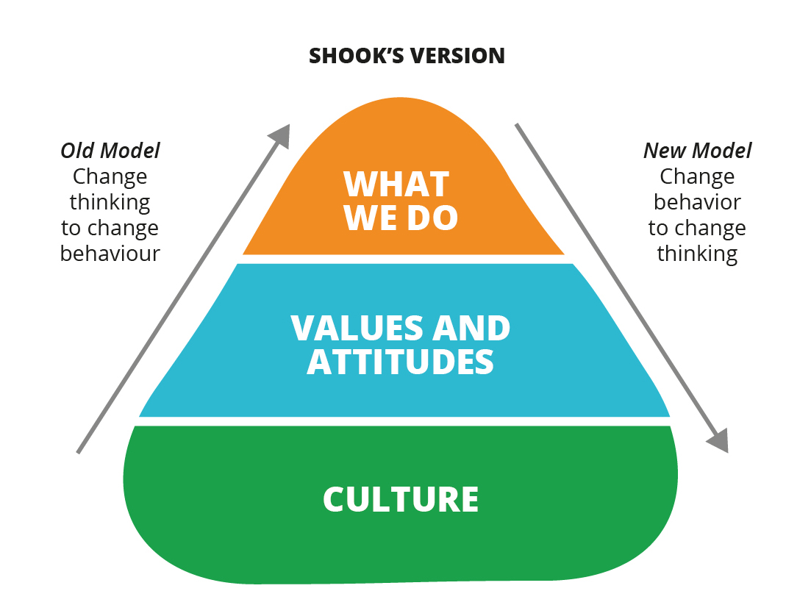
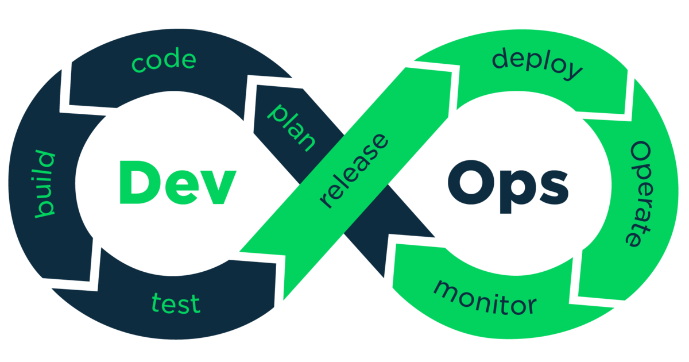
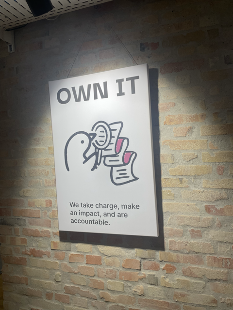

<div class="title-card"> <h1>Docker-compose, DevOps, Continuous Delivery</h1> </div> --- # The weekly plan - Now with milestones! [Weekly Plan](https://github.com/who-knows-inc/KEA_DAT_DevOps_2024_Autumn/blob/main/00._Course_Material/00._Meta_Course_Material/about_the_course.md#course-overall-structure) --- # Weekly DevOps pep-talk! ## Shook's model of behavior **Change behavior to change culture**  [Image source - Oreilley](https://www.oreilly.com/content/business-transformation-starts-with-leadership-transformation/) \- John Shook - First American manager at Toyota --- <div class="title-card"> <h1>Docker-compose</h1> </div> --- # Recap from last semester The assumption is that you have already with docker-compose. Recap of what it is: We can define multiple services, networks, and volumes in a single file. Docker-compose provides a simple singular command to start, stop, and manage multiple containers at once. --- # Docker-compose vs. Docker compose `docker-compose` is the separate command-line tool from Docker. It allows us to define and run multi-container Docker applications. Written in Python. A more recent attempt has been made to include docker compose functionality in the Docker CLI. The plugin can be invoked with `docker compose`. Rewritten in Go. If you want to use `docker-compose` you will have to install it separately. (`brew install docker-compose`, `choco install docker-compose`, etc.) --- # Docker-compose and Docker compose are not interchangeable Given this compose file: ```Dockefile services: web: build: ./node_project ``` `$ docker-compose build web` will generate the following image tag: `node_project_web` `$ docker compose build web` will generate the following image tag: `node_project-web` Notice the hyphens and underscores. This will matter if you are using the image name in your setup. In all of the course material, I will use `docker-compose` for consistency. --- # Let's explore at a compose file Are you familiar with `Awesome Compose`? *Look at this file below and try to understand it line by line* https://github.com/docker/awesome-compose/blob/master/spring-postgres/compose.yaml Feel free to discuss it with people around you. --- # Quick quiz ```yaml services: web: build: . ports: - "8000:8000" db: image: postgres ports: - "8001:5432" ``` *Where is the Dockerfile defined? How do you know?* <details> <summary>Answer</summary> It is defined in the same directory as the compose file. </details> *What is the default port for PostgreSQL? What is the other number for?* <details> <summary>Answer</summary> Default port for PostgreSQL is `5432`. The other number, `8001`, is the port that the container will expose i.e. the port you can connect to the database from the outside. </details> --- # [Networking](https://docs.docker.com/compose/networking/) For example, suppose your app is in a directory called `myapp`, and your compose file looks like this: ```yaml services: web: build: . ports: - "8000:8000" db: image: postgres ports: - "8001:5432" ``` When you run docker compose up, the following happens: 1. A network called `myapp_default` is created. 2. A container is created using web's configuration. It joins the network `myapp_default` under the name web. 3. A container is created using db's configuration. It joins the network `myapp_default` under the name db. --- # Volumes vs. Bind mounts > Volumes are the preferred mechanism for persisting data generated by and used by Docker containers. While bind mounts are dependent on the directory structure and OS of the host machine, volumes are completely managed by Docker. > a volume doesn't increase the size of the containers using it, and the volume's contents exist outside the lifecycle of a given container. [Source - Docker Docs](https://docs.docker.com/engine/storage/volumes/) --- # Volume example with Nginx **Problem**: We want to define a configuration file for nginx. **Solution 1**: Mount your configuration file when running the container: ```bash $ docker run --name my-custom-nginx-container -v /host/path/nginx.conf:/etc/nginx/nginx.conf:ro -d nginx ``` [Source - DockerHub](https://hub.docker.com/_/nginx/) **Solution 2**: Build a custom image with the configuration file: ```Dockerfile FROM nginx COPY nginx.conf /etc/nginx/nginx.conf ``` ```bash $ docker build -t my-custom-nginx . $ docker run --name my-custom-nginx-container -d my-custom-nginx ``` --- # Cleaning up ## Clean up ```bash $ docker compose rm -v ``` ## Nuclear clean up ```bash $ docker stop $(docker ps -q) $ docker rm $(docker ps -aq) $ docker system prune -a --volumes -f ``` --- <div class="title-card"> <h1>Hot reload in Docker</h1> </div> --- # Hot-reload Java: `jrebel` Node.js: `nodemon` Python frameworks usually have hot-reload built-in but nodemon works well to run Python code in Docker in development. **Problem**: Docker makes it harder to achieve hot-reload. **Goal**: Improve the development experience by automatically reloading the application when the code changes. --- # Continuing from last week We have a folder containing a subfolder called `node_project` with a `package.json` file and an `app.js` file. Express has been installed as a dependency and `app.js` contains a simple Express server. --- # Nodemon with Docker example Create a `Dockerfile.dev` file: ```Dockerfile FROM node WORKDIR /usr/src/app COPY package*.json ./ RUN npm install # Install nodemon globally RUN npm install -g nodemon COPY . . CMD npm config set prefer-offline true && nodemon app.js ``` --- # Docker-compose.dev.yml Create a docker-compose file outside of `node_project`. This allows for a nicer separation from the server if we create more services later on. The docker-compose file allows us to define volumes which is necessary for caching the `node_modules` folder: ```Dockerfile services: backend: build: context: ./node_project dockerfile: Dockerfile.dev ports: - "8080:8080" volumes: - ./node_project:/usr/src/app - backend_node_modules:/usr/src/app/node_modules volumes: backend_node_modules: ``` --- # Running the setup Where the `docker-compose.dev.yml` file is located: ```bash $ docker-compose -f docker-compose.dev.yml up --build ``` Try to make a change in `app.js` and see the magic happen. --- <div class="title-card"> <h1>Debug docker-compose</h1> </div> --- # Let's set up a Node.js project In a new directory: ```bash $ npm init -y $ npm install express ``` In the top-level of package.json add `type: module`. --- # Let's create a simple Express server In `app.js`: ```javascript import express from 'express'; const app = express(); app.get('/', (req, res) => { res.send({ data: 'Hello World!'}); }); app.listen(80, () => { console.log('App running on port 80'); }); ``` --- # Create the faulty `Dockerfile` In the root of the project create a `Dockerfile`: ```Dockerfile FROM node:14 WORKDIR /app COPY package*.json ./ RUN npm install COPY . . CMD ["npm", "start"] ``` --- # Create the faulty `docker-compose.yml` <!-- In the root of the project create a `docker-compose.yml`: --> ```yaml version: '3.8' services: app: build: context: . dockerfile: Dockerfile ports: - "3000:80" networks: - app_net db: image: postgres environment: POSTGRES_USER: root POSTGRES_PASSWORD: pass123 networks: - db_net networks: app_net: driver: bridge db_net: driver: bridge ``` --- # Let's run it ```bash $ docker-compose up --build ``` --- # Did it start? Is the process is running? How do we check? <details> <summary>Answer</summary> <!-- ```bash --> $ docker-compose ps -a <!-- ``` --> </details> How do we check the logs? <details> <summary>Answer</summary> <!-- ```bash --> $ docker-compose logs <container_name> <!-- ``` --> </details> --- # You might've noticed it when running `docker-compose up --build` But the it doesn't run because it expect to find a start script in `package.json`. Add it: ```json "scripts": { "start": "node app.js" } ``` Run `docker-compose up --build` again and check if it's running. ```bash $ docker-compose ps ``` --- # Check the logs You should be able to guess the `container_name` based on how it named the db service: ```bash $ docker logs <container_name> ``` There doesn't seem to be any startup errors. It's running as it should on port `80`. --- # Verify what ports have been opened in the container See which ports have been opened in the container: ```bash $ docker ps --format "{{.Names}}: {{.Ports}}" ``` `ss` is a utility to investigate sockets. It's an alternative to `netstat`. ```bash $ docker exec -it <container_name> ss -tuln ``` --- # Let's see if the environment variables work In `app.js`, change the route to the following: ```javascript app.get('/', (req, res) => { res.send({ data: `Hello from the ${process.env.NODE_ENV} environment` }); }); ``` Where has the `NODE_ENV` environment variable been set? What do we expect it to be? Rerun `docker-compose up --build` and check in the browser if it works. --- # It doesn't work In the browser it says: ```json { "data": "Hello from the undefined environment" } ``` Let's see if the environment variable is set in the container. ```bash $ docker exec <container_name> env | grep NODE_ENV ``` --- # The way we defined the environment variable is incorrect In the `docker-compose-yml` file, we can use either: ```yaml environment: - NODE_ENV=production ``` or ```yaml environment: - NODE_ENV: production ``` --- # Let's test out the database Install the PostgreSQL driver (`pg`): ```bash $ npm install pg ``` Add this to the `app.js`: ```javascript import pkg from 'pg'; const { Pool } = pkg; const pool = new Pool({ user: process.env.POSTGRES_USER, host: 'db', database: 'postgres', password: process.env.POSTGRES_PASSWORD, port: 5432, }); pool.query('SELECT NOW()', (err, res) => { if (err) { console.error(err); } else { console.log(res.rows[0]); } }); ``` --- # First: Let's debug the container Verify the database container is running: ```bash $ docker-compose ps ``` Check logs for database startup issues: ```bash $ docker logs <db_container_name> ``` --- # Next: Let's debug the connection Pre-debug step: Install `ping` in the app container: ```bash $ docker exec -it <app_container_name> apt-get update $ docker exec -it <app_container_name> apt-get install -y iputils-ping ``` Test connection between containers (using Docker’s built-in networking): ```bash $ docker exec -it <app_container_name> ping db ``` We are **not** able to ping it. Try connecting manually to the db container: ```bash $ docker exec -it <db_container_name> psql -h db -U root -d postgres ``` But we *are* able to access the database. --- # See which networks the containers are connected to List all networks: ```bash $ docker network ls ``` Check which networks the containers are connected to: ```bash $ docker inspect <app_container_name> --format='{{json .NetworkSettings.Networks}}' | jq '.[].NetworkID' $ docker inspect <db_container_name> --format='{{json .NetworkSettings.Networks}}' | jq '.[].NetworkID' ``` `.[].NetworkID'` is a `jq` filter to only display the network id. You can also try without it. The networks have different ids. They are not connected to the same network. --- # Simplify the `docker-compose.yml` and let them join the same network ```yaml version: '3.8' services: app: build: context: . dockerfile: Dockerfile ports: - "3000:80" environment: - NODE_ENV=production db: image: postgres environment: POSTGRES_USER: root POSTGRES_PASSWORD: pass123 ``` --- # Problems with the environment variables again To see the environment variables in the container: ```bash $ docker exec <container_name> env ``` *What is the problem? How do we fix it?* <details> <summary>Solution</summary> The environment variables have not been defined on the app container. There are better solutions but one could simply add them to the compose file: ```yaml environment: POSTGRES_USER: root POSTGRES_PASSWORD: pass123 ``` </details> --- <div class="title-card"> <h1>Agile</h1> </div> --- # Historical View: NOT! agile Software __engineers__ created software **blueprints**. Before you could even start implementing (coding) you had to do: - Feasibility study, Market research - Risk analysis - Requirement analysis - Write thorough specification - System and software design - Feature extraction and estimation --- # The waterfall model <div> <img src="./assets_devops//waterfall_model.png" alt="Waterfall model"/> </div> Source: https://theincrowdvlog.com/article/8-fundamental-sdlc-models-every-developer-should-know-ishir --- # Discuss: What are the problems with the waterfall model? --- # Note: The waterfall model has its place For some projects the waterfall model is the right choice. For instance, when there is only one iteration needed before the project is done. Also, analyzing and planning before coding is extremely important, especially for large systems. Agile development does not eliminate those steps. Instead it allows one to move back and forth between the steps. --- # The Agile Manifesto https://agilemanifesto.org/ --- # Video about The Agile Manifesto [](https://www.youtube.com/watch?v=rf8Gi2RLKWQ) (Sorry about the happy ukulele music.) --- # Let's be critical! Research into the state of agile in the industry: https://www.itpro.com/software/agile-development-is-fading-in-popularity-at-large-enterprises-and-developer-burnout-is-a-key-factor Problems: - Culture clash: Organizational resistance - Lack of leadership support - Siloed teams > “The larger the organization, the more likely it is to use a hybrid model,” the report said, noting that bigger teams are also more likely to still use waterfall. The research still finds value in agile. It finds it to be best in small organizations. --- # Be critical of buzzwords in this industry Many companies claim that they're agile when they're not. --- <div class="title-card"> <h1>DevOps</h1> </div> --- # What is DevOps? A short but informative video by GitHub. [](https://www.youtube.com/watch?v=kBV8gPVZNEE) --- # Why DevOps? *DevOps is an easy sell because it is focused on creating value (for the business > for customers > for developers):* Easy to make small changes and fix bugs ⇒ better product for user ⇒ business makes cash Quicker way to deploy new features ⇒ competitive product on the market ⇒ business makes cash Tests ensure robustness ⇒ production isn’t down ⇒ business makes cash Server access isn’t given freely ⇒ better security means lesser chance of hacking ⇒ business makes cash Infrastructure is reproducible ⇒ recovery takes minutes rather than days or weeks ⇒ business makes cash --- # Literature: DevOps Handbook <div> <img src="./assets_devops/devops_handbook.png" alt="The DevOps Handbook" style="height:45vh;" /> </div> --- # Literature: The Phoenix Project <div> <img src="./assets_devops/the_phoenix_project.png" alt="The Phoenix Project"/> </div> --- # Historical View Before DevOps: release cycle: months - years Ideal: Multiple times a day Goal: How do we create infrastructure to reach the ideal without firefighting Why? To bring value to the users --- # Dev vs. Ops <img src="./assets_devops/dev_vs_ops.png" alt="Dev vs. Ops"/> --- # DevOps Möbius strip  --- # Yet another rant You are not DevOps if your company has a DevOps team. I had a discussion recently where I heard from this company in Denmark saying: “We have a dedicated DevOps team, so that the developers don’t have to concern themselves about pipelines and deployment.” That is antithetical to the goal of DevOps. Unless everyone is responsible for the whole pipeline, you are not doing DevOps. That company calls itself DevOps but is actually doing the opposite. --- # DevOps is a culture Values on display at [Factbird](https://factbird.com/). <div style="display: flex; justify-content: space-between;">  <img src="./assets_devops/factbird_value_2.png" alt="fact bird values" style="height: 25vh;"> </div> --- # DevOps culture = Review culture It's a culture of transparency. --- # Code Reviews at Google <img src="./assets_devops/code_review_turnaround_by_size.png" alt="google code review turnaround size"> The larger the change, ,the longer to get reviews completed. [Source](https://qconsf.com/sf2010/dl/qcon-sanfran-2010/slides/AshishKumar_DevelopingProductsattheSpeedandScaleofGoogle.pdf) --- # Pair programming *What do you personally think about it?* There are no wrong answers. --- # A quote > I can’t help wondering if pair programming is nothing more than code review on steroids... The advantage of pair programming is its gripping immediacy: it is impossible to ignore the reviewer when he or she is sitting right next to you. > Most people will passively opt out [of reviewing code] if given the choice. With pair programming, that’s not possible. Each half of the pair has to understand the code, right then and there, as it’s being written. Pairing may be invasive, but it can also force a level of communication that you’d otherwise never achieve.” \- Jeff Atwood, One of the founders of Stack Exchange --- # Slower but better > paired programmers are 15% slower than two independent individual programmers, while “error-free” code increased from 70% to 85%. Since testing and debugging are often many times more costly than initial programming, this is an impressive result. Pairs typically consider more design alternatives than programmers working alone and arrive at simpler, more maintainable designs; they also catch design defects early. \- Dr. Laurie Williams (Study performed in 2001) --- # After the holiday Please read all the material before the guest lecture. Let the guest lecture inspire you. There is dedicated time to discuss the more philosophical aspects of DevOps and a chance for you to be critical of the concepts after the holiday. But for now, focus on understanding the concepts and the literature. --- <div class="title-card"> <h1>Continuous Delivery</h1> </div> --- # Same discussion again > A CI system clones the codebase for the software under consideration from a source control system such as GitHub, builds the software into an artifact that can be a binary, a tar archive, or a Docker image, and, very importantly, also runs unit and/or integration tests for the software. A CD system deploys the artifacts built by the CI system to a target environment. This deployment can be automated for nonproduction environments, but usually includes a manual approval step for production. A more advanced type of such systems is a continuous delivery platform, which automates the deployment step to production and is capable of rolling back the deployment based on metrics obtained from monitoring and logging platforms. N. Gift et al. [Python for DevOps](https://www.oreilly.com/library/view/python-for-devops/9781492057680/) *Do you consider anything off about the definition above?* <details> <summary>Answer</summary> The definition above seems to consider building Docker images as part of Continuous Integration. Most other sources would not agree with this. It's important to understand that the responsibility of each step is fluid and defined differently in different organizations. </details> --- # Deploying a Docker container to GitHub Packages Remember to specify the correct image name under the organizations namespace in the docker-compose file. For instance: ```yml services: backend: build: ./backend image: ghcr.io/<org-name>/<image-name>:latest ports: - "8080:8080" volumes: - ./backend:/usr/src/app - backend_node_modules:/usr/src/app/node_modules depends_on: db: condition: service_healthy environment: DATABASE_HOST: db ``` --- # Whoknows variations - Continuous Delivery https://github.com/who-knows-inc/whoknows_variations/tree/continuous_delivery